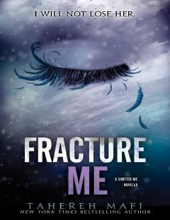

FMAdam Kent nuqtai nazaridan yozilgan "Shatter Me" turkumidagi qisqacha hikoya.
Bu asar Tahereh Mafining mashhur "Shatter Me" seriyasiga kiruvchi qism bo'lib, voqealar Adam Kentning nuqtai nazaridan hikoya qilinadi. Kitobda qahramonlarning jang oldidagi ichki kechinmalari, ziddiyatlar va murakkab munosabatlar ochib beriladi.